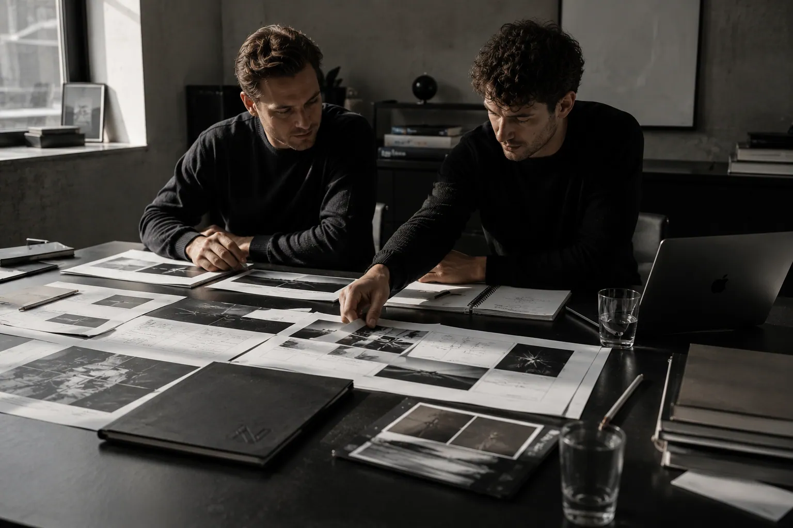
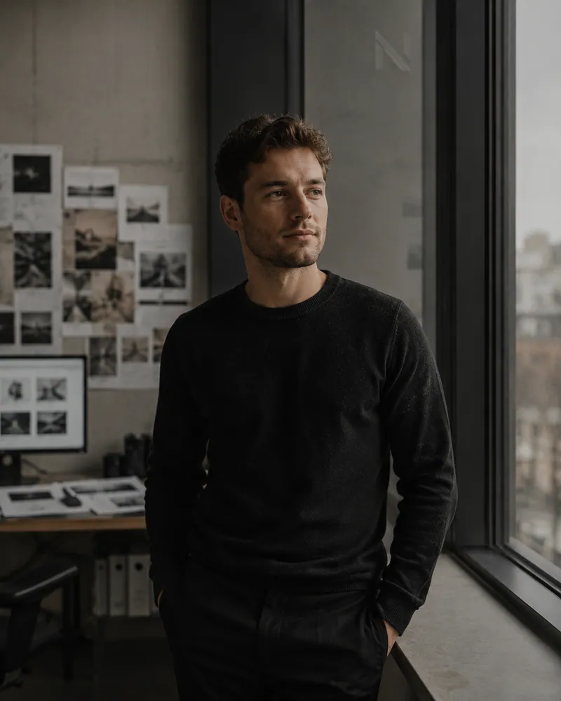
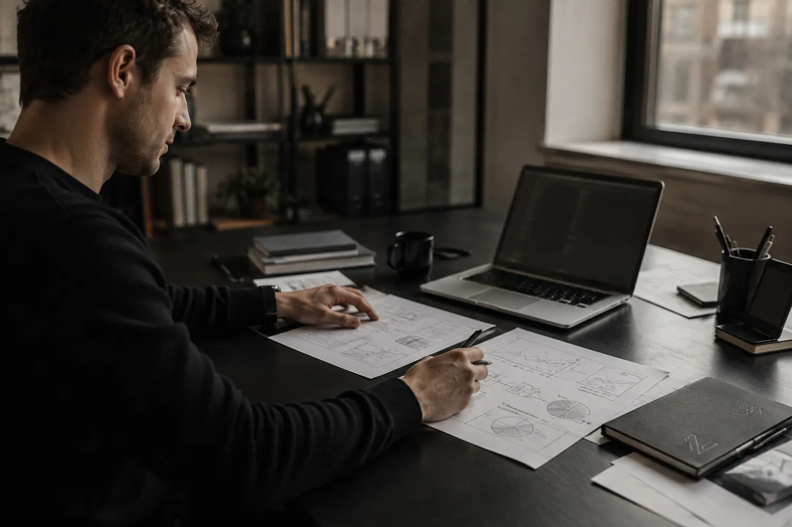

Studio für Gestaltung — Köln
Entworfen auf Papier. Gebaut für den Bildschirm.
- Disziplinen
- Identität, Art Direction, Interface
- Arbeitsweise
- Analog entworfen, digital gebaut
- Verfügbar
- Ab Q1 2027
02 — Aus dem Atelier
02
Wir zeigen den Kontaktbogen, nicht nur den fertigen Abzug. Was hier liegt, ist der Zwischenstand: Auswahl, Andruck, Verwurf.
03 — Studio
03
Sechs Leute, ein Tisch, viel Papier. Wir arbeiten an Marken, die gedruckt werden müssen und trotzdem auf einem Telefon funktionieren.

Nocturne ist 2014 aus einer Druckwerkstatt entstanden. Das prägt bis heute, wie wir arbeiten: Ein Entwurf gilt erst dann als fertig, wenn er einmal auf Papier lag und die Prüfung überstanden hat.
Wir übernehmen Markenauftritte von der Recherche bis zur Auslieferung — Wortmarke, Bildsprache, Satz, Drucksachen und das digitale Gegenstück dazu. Kein Projekt läuft über eine Vorlage. Jedes beginnt mit der Frage, was das Material hergibt.
Am liebsten arbeiten wir dort, wo beides zählt: Häuser mit Geschichte, die eine Gegenwart brauchen. Kulturbetriebe, Verlage, Manufakturen, gelegentlich ein Produkt, das sich Sorgfalt leisten will.
- Gegründet
- 2014
- Team
- 6
- Standort
- Köln
- Sprachen
- DE / EN
04 — Prozess
04
Vier Schritte, in dieser Reihenfolge. Der dritte ist der, den die meisten überspringen — und genau der entscheidet.
-
Recherche
Wir sichten, was schon da ist: Archiv, Drucksachen, Fotobestand, Wettbewerb. Am Ende steht keine Präsentation, sondern ein Stapel Material mit einer Haltung dazu.
-
Entwurf auf Papier
Raster, Satzspiegel und Bildkanten entstehen mit dem Bleistift. Das ist schneller als jedes Werkzeug auf dem Bildschirm und verzeiht mehr Irrtümer, solange sie nichts kosten.
-
Andruck und Abnahme
Jeder Entwurf geht einmal durch die Maschine. Papier, Farbauftrag und Prägung werden gemeinsam abgenommen — am Tisch, unter Tageslicht, nicht per Datei.
-
Digitale Umsetzung
Was auf Papier trägt, wird übersetzt: Typo-Skala, Farbmarken, Komponenten und der Code dazu. Wir übergeben keine Bilder von einer Website, sondern die Website.

05 — Kontakt
Schicken Sie uns das Material. Wir sagen Ihnen, was daraus wird.
- Anfragen
- studio@nocturne.example
- Telefon
- +49 221 000 000 0
- Atelier
- Nordseite, 3. Etage
Köln
© 2026 Nocturne — Studio für Gestaltung